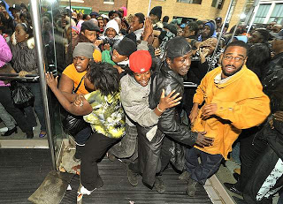
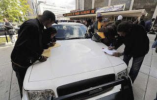

Detroit, Riot City: In scenes better suited to a Third World country (above, and below right), tens of thousands of desperate people assemble outside Detroit's Cobo Center in the hope of receiving $3,500 emergency welfare aid disbursements. Unemployment in Detroit is nearly 29 percent.
An individual in the habit of passing bad checks can't complain that he's the victim of a criminal conspiracy if local merchants compare notes and decide not to take any more of his bank drafts. Such coordinated action isn't a "plot" or a "scheme" -- it's a form of cooperative self-defense by people who have been victimized by fraud.
The same principle applies to the alleged "conspiracy" against the U.S. dollar reported earlier this week by Robert Fisk of the London Independent:
"In the most profound financial change in recent Middle East history, Gulf Arabs are planning – along with China, Russia, Japan and France – to end dollar dealings for oil, moving instead to a basket of currencies including the Japanese yen and Chinese yuan, the euro, gold and a new, unified currency planned for nations in the Gulf Co-operation Council, including Saudi Arabia, Abu Dhabi, Kuwait and Qatar."


As Fisk pointed out in a follow-up report, the "de-dollarization" of the oil market -- a process Iran has already begun, which helps explain Washington's bellicosity toward Tehran -- "reflects a growing resentment in the Middle East, Europe and China at America's decades-long political as well as economic world dominance."After unpacking that observation a little bit we should understand that the resentment has as much to do with the method Washington has employed to maintain its dominance, as with the fact of that dominance itself: Since the dollar was entirely de-coupled from gold in August 1971, Washington has essentially been running an empire on money borrowed from the same people it seeks to push around.
During the most hubristic phase of the Bush-Cheney regime, Pentagon "futurist" Thomas P.M. Barnett explained that in the global division of labor, countries like China make things, earn money, and lend that money to the U.S. Government. Washington, for its part, provides "security" in the form of wars, occupations, and other acts of mass destruction.
Barnett wrote an entire book -- The Pentagon's New Map -- based on that the assumption that this arrangement would define world affairs for at least the next several decades. The news that America's creditors aren't going to permit Washington to continue with its oddly impecunious imperialism was no more surprising than the revelation that Barnett is a crack-pot rather than an oracle.
Officials in all of the relevant countries hastily disavowed Fisk's report. This didn't prevent a flight to gold. In fact, the frantic efforts to sustain the fiction that the dollar is in any sense a store of value probably amplified the rush to gold, in the same sense that subjects of the Soviet state didn't believe tales of official corruption and abuse until they had been officially denied.
Washington's courtiers in the "respectable" media characterized the developments described by Fisk as a "plot" against the dollar, or a "sneak attack" against Washington's economic hegemony.
Oh, those damned Arabs -- how dare they want something of actual value in exchange for the world's most coveted commodity! Those devious Chinese -- by what right would they stop underwriting Washington's debt?
Strangely enough, none of those assailing the Arabs and Chinese for backing away from the dollar have seen fit to condemn the individual who actually recommended this course of action roughly a year and a half ago: Alan "Fifth Horseman of the Apocalypse" Greenspan.

As I noted at the time (see "Our Money's No Good Here," February 25, 2008), during a conference of the Gulf Cooperation Council in Jedda, Saudi Arabia, Greenspan -- the indispensable architect of the ongoing global depression -- urged the Arabs and their allies to abandon the dollar whose value Greenspan had done so much to destroy.
Since the creation of the Federal Reserve System in 1913, the dollar has lost 96 percent of its purchasing power. The fact that the dollar can be used to purchase anything of value is an abiding testimony to the power of official myths to contort the thinking process of human beings en masse.
There is nothing behind the dollar apart from the "full faith and credit" of the world's most powerful criminal syndicate -- well, that, and the willingness of oil-producing states to accept the dollar in exchange for petroleum. Cut that last lifeline, and there is nothing to impede the dollar's immediate fall into utter uselessness.
I find myself reminded of the old joke about an astrophysicist who is accosted after a public lecture by a crusty old man of decidedly pre-Copernican views of the universe.
"You seem like a very bright young fellow," the old man begins, seasoning his words with condescension he wasn't entitled to express, "but you've got it all wrong. You see, the earth is actually carried on the back of a giant turtle. That's the simple truth."
"But what supports that turtle?" inquires the astrophysicist with a mixture of amusement and annoyance."
"Why, another turtle, of course!" ripostes the old man.
"And what --" begins the increasingly irritated scholar, before being cut off.
"You're a clever fellow, but it won't work!" exclaims the old man. "It's turtles all the way down!"
Commissar Bernanke and other guardians of official monetary superstition are committed to preserving the delusion that prosperity can be sustained on the back of a currency that is backed by nothing but itself. It's dollars all the way down -- an infinite regression into worthlessness. And, pace the plans of the anti-dollar coalition described by Fisk, the descent shouldn't take nine years.

The term "apocalypse" refers to an unveiling, a revelation, a dramatic disclosure. We're in the early stages of a dollar apocalypse -- a process that will expose the Greenback as a fraud. Already we're seeing portents of what America will look like as the unveiling continues.
Detroit, once the paradigm of America's industrial power, has become an economic moonscape. More than half the population lives below the poverty level; unemployment is nearing 29 percent, and grass is literally growing in the streets of some neighborhoods. Unburied bodies are accumulating in the county morgue because nobody has sufficient funds for interment or cremation.
A few days ago, tens of thousands of desperate Detroit residents besieged the Cobo Center in the hope of receiving housing assistance vouchers provided by the federal government. Within less than three minutes, 25,000 applications were filled out for 3,500 available vouchers.
***
***
Amid the scuffles, tramplings, death threats, and other incidental violence, a telling example of the self-replicating fraud of our monetary system could be seen. The Detroit News reports:
"After the applications ran out, some scam artists were selling photocopies of the originals for $20 each. They were doing a brisk business, even though the white original forms state clearly on the bottom: `Do not duplicate -- Must Submit Original Application.' Volunteers from the city of Detroit Planning and Development Department eventually handed out yellow photocopies themselves."


Coercion and redistribution: Detroit residents fill out welfare voucher applications on the hood of a police car.
Here we can see the terminally corrupt financial system in tragic microcosm.
The Feds, through the miracle of deficit spending financed through inflation, issue vouchers to substitute for the regime's worthless legal tender.
Some local scam artists exploit the desperation of the destitute by producing worthless counterfeits of the vouchers and charging for them.
Rather than punishing the criminals who created and sold those worthless documents -- call them voucher "derivatives" -- government officials simply make that scam official policy on the assumption that other people somewhere will absorb the costs. This is the same mechanism used to bail out the corporatist welfare whores of Wall Street, just on a much more limited scale. The biggest difference, of course, is that while most of the welfare applicants in Detroit were left with worthless applications, the welfare whores on Wall Street were spared such disappointment.
It's fiat "money" and criminal fraud all the way down. How far does "down" go? We're going to find out.

Be sure to listen to Pro Libertate Radio on the Liberty News Radio Network every weekday from 6:00-7:00 PM Mountain Time (7:00-8:00 PM Central).
Dum spiro, pugno!
30 comments:
More of the disastrous legacy of Alexander Hamilton at work.
It's going to get bad. Buy beans, rice, veggies, potatos, chili meat - and start planting. Get a good water filter. .22 lr will be the pocket change of the 21st century. Get out of the cities.
Mr. Grigg, in your opinion, how bad will it get? Do you think states will sever themselves from the beast, or are they too corrupted? Will it be every man and his clan for themselves?
To me, this is an excellent pretense for martial law, the creation of some type of North American Region (or straight to global governance), and the creation of either a regional currency or a global one.
The people will most likely demand it.
It is my opinion that the illuminated ones are using the dollar demise and the ensuing depression as a way to make it possible to enact either regional or global governance, with the support of the sheeple who have seen their entire livelihoods vanish in the span of a few months.
I am hoping that this plan backfires on them and either the states secede or new (FREE) states are formed. Perhaps total anarchy will ensue, which in the long run will be a very good thing, but in the short run has the potential to be devastatingly violent and full of death.
Mr. Grigg, I hasten to call these people "desperate". Many look like they have gotten along just fine with government assistance for a long time. Yesterday there were women being interviewed saying "Obama" was giving them "Obama money" from his "stash", and that was "Why we love him" and "why we voted for him".
Eventually "Obama money" will have all the hallmarks of "kaiser money". Then when there is no one to take care of those who have abdicated responsibility to others we will finally see desperation.
Zimbabwe wallpaper money and free guvmint cheks for all yippeee w000t!!
Anonymous @ 1:13PM, I agree. There have always been hordes of Leviathan teat-suckers out there in the inner cities who are a far cry from suffering real poverty.
I can't agree with Mr. Parris, though, that anarchy would be any kind of "very good thing," especially with a morally bankrupt population, the converse of whom would disdain the very idea of anarchy in the first place. First, there would be no respect for private property rights, civil rights, religious rights, all rights. Thus, the demand for Leviathan action, as Mr. Parris himself intuitively predicts would transpire (and I agree), by the masses would be deafening. Second, by extension, Leviathan would then inevitably clamp down on all remaining liberty and smack down, not just the roused rabble kindling the chaos, but everyone.
Anyway, back to the impending apocalypse. This Detroit newsflash merely showcases one pristine exemplar of many others across the country; no surprise there (duh!). But nowadays, there are ever expanding teat-sucker contingents within the middle-class arena, what's left of it.
These folk here are merely the bottom-feeder contingent of an otherwise huge dependency class, spanning the entire commoner population. The bottom-feeders are those who always loiter round about the trough, even though they manage to grab only the "scraps" of any available largess. The Wall Street/corporatist/banksta class at large, of course, always grab the lion's share.
Regardless, this kind of scenario will be replayed all along the dependency chain involving all socio-economic strata although, perhaps, not as acutely as it will play out in the inner urban jungles.
We ain't seen nothin' yet. I also would agree that folk who live in them to get the heck out of urban sardine cans, ASAP.
And to Will, I reckon your ear-wiltin'/eye-glazin' "peace be upon him" qualifier you "devotedly" append to his name, verbally and in writing, might have helped tip the scales and make the choice obvious to the Norwegian Nobel Committee. The Magic Negro received the Nobel "Peace" Prize today. Sigh...I guess currency isn't the only thing being debased and/or rendered meaningless these days.
They are "desperate". Fiat money destroys the morality of the people. The people most needing morality are those without the resources to be able to weather the results of immorality.
Minimum wage laws, mandatory benefit laws, the war on poverty and the drug war have ruined entire generations of people, all to create political power for some who can then lead these sad people to steal from another group after killing their first "benefactor".
+1 kudos to Will for using the "turtles all the way down" story. It was a favorite of my old philosophy professor back in the '80s.
Ironically, December 2012 is as likely a time for the economic armageddon as any. The ancient Mayans referred to this as the "Coming of the Greenspan" and the "Alignment of the Worthless Currencies".
if i were that poor, i may very well spend $20 in the hope that my photocopied application might somehow slip through the cracks and get accepted. it's that kind of thinking that probably got me poor, or kept me poor, in the first place, no? so these may be scam artists, but the desperation painted into this scenario leaves the purchaser no less at fault for being scammed willingly. i wouldn't call them "voucher derivatives," i'd call them "bailout options."
now if you told me these scammers posed as authorities, that might be different.
While I agree with most of your article (indeed, most of your articles), I think that you are ignoring the elephant in the room with regards to Detroit: race. The fact is, those scenes are taking place in Detroit because the city has shifted from a majority white city in the 1950s to a presently 80% black population.
Man, you guys are depressing!
So this is the post racial paradise Obamber promised. I feel the love when I hear what the fuck you lookin' at redneck. Not to worry though Civil War Version 2.0 is going to be a real motherfucker. P.S. The government confiscated gold before and they will again. How will you barter with the gold when the gov. makes it illegal to own?
Odoacer -- You correctly describe some of the racial undercurrents running beneath this story. Detroit has become a museum-quality exhibit of the politics of race-obsessed misrule during the past several decades.
I'm not convinced that race is the critical variable here, however. Detroit is full of people convinced that they are entitled to live at the expense of others. That's a collectivist heresy that transcends racial and ethnic boundaries, and has certainly destroyed more than a few European countries and cultures.
There will be cries from freedom lovers for secession from a country that is rotting from within.
Another great essay, Will. Scary times straight ahead.
I have been downloading your radio shows for my drive time listening pleasure. I urge others to do the same. Great stuff, and a welcome departure in style from Alex Jones and Alan Watt, although I love them too.
Hey, which sycophantic, unctuous creep do you like better, Thomas P.M. Barnett or Tom Friedman? Tough choice, huh?
R Cozine
A city with such an incredible unemployment rate and at the same time a complete meltdown in its real estate market. Is it any surprise, with such intellectual and moral titans, as anonymous earlier posted, saying it's "obama money".... You could say idiocy, and Hell itself, just had a new ring built, and called it Detroit.
We have what we have for tolerating that which we have tolerated, the "we" referring to the vast collective among us that has assumed an entitlement mentality at the behest of their lords and masters. The exchanging of souls for fiat has run its course and the damage is all around for anyone not willingly blind to see. That there are more calls for more of the same from the bought-and-paid-for reveals the depth of the educational, financial and moral abyss this nation has entered. This abyss will not easily be escaped from, as well, all the powers that be from the corrupt District of Criminals to the corrupt sitting on their porches expecting their piece of the largesse doing all in their power to maintain the status quo, even if the status quo is revoltingly disgusting beyond description.
Fiat money systems have allowed growth of govt, growth of "security" apparatchiks that resemble storm troopers, financed wars without raising taxes (inflation doing the heavy lifting behind the backs of the economically challenged that suffer the ravages of inflation) and, finally and most egregious, the PURCHASE OF VOTES FOR THE EXPRESS PURPOSE OF MAINTAINING POWER OVER US ALL. That congress abdicated its responsibility to a private enterprise - the Fed - is no surprise to anyone who bothers to inform themselves. After all, the real purpose of congress is self first, party second. There is no real "third" to these untermenschen who are merely con men in expensive garb. The Fed was drawn up by banksters then, continued with banksters at the helm and remains, even now, made up of banksters in charge of our money supply even though it has totally destroyed the value of money. That congress accepts this reveals what "representation" means today.
In the end, so much power has been accrued that this monster goes on its merry way no longer even bothering to conceal its growing acquisition of power on the back of all, cheered on by those who receive the largesse at the expense of those who pay it. So be it. Cracks are appearing and enlarging. The beginning of the end is showing itself for all to see. The real question: what will be the appearance of the Phoenix that arises?
I believe the intention of the fed gov through the -zero dollar is to, in dixiedog's words ".. inevitably clamp down on all remaining liberty and smack down, not just the roused rabble kindling the chaos, but everyone."
It does not take a Yale education to see the end result of what the Federal Reserve has been doing will be. Couple that with nanny-state policies and the apocalyptic endgame is a given. It's just a matter of when.
I'm not sure that I am ready to so easily confuse dependence and desperation, though I note that it is in the interest some to conjure the former from the latter. I sincerely hope they fail, because it would be a shame if these Several States were without at least one culture in which a spirit of resistance is preserved.
ok,I dont even know where to begin but I think we have to get back to basics and..well take back what is ours out of the hands of those in high places.
http://thedeclarationoftheunitedstatesofamer.blogspot.com/2009/10/lest-we-forget-what-our-duties-are-as.html
Tricky Dick Nixon had his revenge taking USA off the gold standard. Didn't he do it because the French asked for some gold or something I was an embryo when all this was happening. This could be a great sticker or t-shirt, have a nice apocalypse.
Its not just the value of our money that is part of the plan. Look at how the food system is being attacked by our own government. The three states with the most game have had the gray wolf forced on them and the herds of game have been cut down by more than have. This by itself could be explained away with many viewpoints. However with the water being shut off to farm land in Calif that produces half of all the fruits and veggies grown in this country, the picture becomes more clear. Now the attack is on stockyards that produce beef and dairy products, because animals fart. Now the picture becomes crystal clear. With food being in short supple and hyperinflation many folks are going to starve. Now we get down to the nitty gritty of these international bankers because their MO is to starve people to get the upper hand. These same monsters start wars so they can lend billions to the governments doing the fighting so they can have the populations working/slaving away to pay back the loans with insane amounts of interest.
I have no clue where this country is headed but I know for a fact that times are going to get very dangerous and scary. These are some of the last days this country has at peace and plenty. Enjoy every second of it because you will more than likely never see such times like these again in your lifetime.
dixiedog,
I believe that if complete anarchy is the result of our currency collapse, that in the short run, tens of millions of people will die of starvation. Perhaps more than that. I hope not. Whether they are morally degenerate or not, I hope not. Many will be children.
But I believe that for the survivors of the first few months of anarchy, whether it be 80% of the population or 1%, the world will turn, and freedom, prosperity and peace will hopefully ensue for many, many generations. Perhaps the survivors will learn from the lessons of the past this time. When I said long run, I meant at least a year or two. Maybe it will be more. I hope not. We will see. The first year of it will be absolutely terrible, no doubt.
I hope that anarchy will not ensue. If it does, it will get very violent, very fast. I'd much prefer the constitutional republic we started out with.
Also, if we truly turn into an anarchical society, there will be no Leviathan. The checks won't mean sh*t. Perhaps the military/National Guard/police forces will be called out to enforce martial law. It is certainly a viable possibility. But not ALL of those guys are bad. A good percentage of them are statist pigs who will not hesitate to disarm you, haul you off, maybe even shoot you, but not all of them. I bet a good number will be much more concerned with the safety of their own families.
Mr. Grigg I just finished you book "Liberty in Eclipse" and found it absolutely gripping. If you would be so kind as to point me to other resources that you have been blessed by in your studies I would be very appreciative. Right now I am reading Madison's account of the debates during the constitutional convention, as if the intention of the founders was ambiguous in the language of the constitution. That text should be required reading for anyone entering political office in the federal government.
Anyway I just wanted to say I loved your book, and I throughly am enriched by your radio show and I pray for you and your family. God bless.
The only hope that we can hold out for is that some good will come of this. Namely, that we will be forced back onto using the gold standard. Sure, it will hurt for a little while, but it is truly the only long term solution for a nation and a world addicted to paper currency.
"That text should be required reading for anyone entering political office in the federal government."
I think Medusa's Picture Book should be required reading for anyone entering political office in any appendage of the State.
-Sans Authoritas
Entitlement is part of the affluent culture too. This afternoon my spouse and I decided to ride our bikes five miles to the McD's for supper. As we sat in a booth eating our meager meal ordered from the $1.00 menu an adolescent male left his booth and his buddies, approached us and said to my spouse, "My friend is a little short of money. Could he borrow 30 cents for an ice cream cone?" My husband told him no and he returned to his friends and booth where they sat on, playing on their cell phones and goofing off. This community is extremely affluent. These boys should have been ashamed but they were not. They felt entitled evidently. And why not? Every levy and bond issue is passed by the community. Most of the kids here are spoiled beyond belief. I'm sure they were shocked that we did not hand them money.
Now Obama is working on outlawing fishing. They're covering all the bases
Josh Parris: I believe that if complete anarchy is the result of our currency collapse, that in the short run, tens of millions of people will die of starvation. Perhaps more than that. I hope not. Whether they are morally degenerate or not, I hope not. Many will be children.
Well, children (dawn of life) and elderly (twilight of life), unfortunately, are indeed too often the most numerous of victims in war, in a famine, in a pandemic, etc. It has been so for time immemorial, and it will continue to be so until the real prince of peace, the Lord Jesus Christ returns to earth. However, in America, it must be noted we've already witnessed the death of ~50 million unborn children since 1973 when none of those aforementioned scenarios were/are a reality in our country.
Josh Parris: But I believe that for the survivors of the first few months of anarchy, whether it be 80% of the population or 1%, the world will turn, and freedom, prosperity and peace will hopefully ensue for many, many generations. Perhaps the survivors will learn from the lessons of the past this time. When I said long run, I meant at least a year or two. Maybe it will be more. I hope not. We will see. The first year of it will be absolutely terrible, no doubt.
I do find your optimism about freedom prevailing or being sustained long-term, never mind germinating, without a sense by the commoner folk at large of what true freedom really means, to be baseless. No, I'm definitely not talking about the brash, emotional, unbridled, meaningless "f-r-e-e-d-o-m!" in the sense of the movie Braveheart. True freedom begins in the heart, otherwise we merely repeat over time, ad infinitum, the same actions that inevitably bring us down low in the first place. Abstract "f-r-e-e-d-o-m!" is indeed a meaningless concept.
Josh Parris: I hope that anarchy will not ensue. If it does, it will get very violent, very fast. I'd much prefer the constitutional republic we started out with.
But why get very violent, very fast? How will that kind of behavior/action rightfully solve anything? Why can't folk, who presumably are under self-control and know how to self-govern (require no earthly arbiter), simply and quietly disobey immoral and/or unconstitutional "laws"? And let Providence handle the attendant consequences as He sees fit? There's always a lot of TALK from many quarters, but very little or no righteous ACTION to speak of. As you may or may not be a believer, of course, I pointedly aim that particular admonishment to fellow Christians. Instead of being salt and light, too many of us have attempted to be incognito. Why? Because we also want our fat house, fat car, fat food, fat paycheck, etc., ad nauseam, ad infinitum. I used to faithfully, but vainly, attempt to follow the same meaningless, materialistic path, but not anymore.
Yes, I also prefer the constitutional republic of yore. But it has been slowly and gradually eroded away under our noses and with our own greedy participation (increasing dependency by choice). What did we expect to happen?
I think this country needs to be brought low and humbled, so to speak, and then hopefully some of its people will be shaken from their apathetic, "go along to get along" stupor. My view is that even if the country itself is destined for destruction and/or irrelevance in the grand scheme of things in the near future, as I tend to opine will be the case, we can nevertheless help salvage individual souls and help them find and grow in the knowledge of The Truth. Besides, that's what the hardcore meaning of life here and now is truly all about anyway. "The grass withers and the flowers fall, but the word of our God stands forever." (Isaiah 40:8, I Peter 1:24-25)
(cont'd)
Josh Parris: Also, if we truly turn into an anarchical society, there will be no Leviathan.
Yes, yes, that's certainly one definition of "anarchy," but the reality, IMHO, would not be so precise. If anarchy, as I gather you mean it here, were even really feasible or possible (i.e. really NO Leviathan, at ALL, existed) it wouldn't then be Leviathan one would have to worry about, but the hordes who have no self-control without that damned Leviathan providing the control. Remember what true freedom is all about?
On a sidenote, folk can claim to be "atheist" (defined as belief in no God or gods), but, in reality, they have a faith in someone or something. They obey and will always generally obey that someone or something. Thus, he (dictator)/she (dictatorette)/it (Leviathan abstractly) acts as, and implicitly represents, their god even though they themselves would think that ludicrous.
Josh Parris: I bet a good number will be much more concerned with the safety of their own families.
And also presumably be much more concerned with the safety of their own families, at the expense of others. Would you not agree? Well, acting naturally, there's no question they will. Now, think hard on that for a minute, or five, and grok my added emphasis in light of all that's been mentioned above.
Another sidenote. Have you ever asked a motley assortment of Joe or Jane Does somewhere (at work, in the grocery line, anywhere) this question or one similar, "Hypothetically, who/what is it from your perspective that is most successful in preventing you from turning an evil thought into an attendant action, i.e. carrying out a theft, a murder, a rape, a lie, etc." and catch the responses? I usually (but not always) receive, in essence, a response of this caliber: "I don't want to end up in the pokey!" or "I'd die if my wife/husband found out!" and so on.
In other words, that kind of response indicates man or, when extrapolated out, Leviathan, is the arbiter/judge of what absolute "right" and "wrong" are to be. It's quite telling that too many folk never say something simple and terse like, "Because it's wrong, period!"
Again, as I said earlier, Leviathan represents their god to whom they will bow and grovel, their roaring denials notwithstanding.
dixie dog,
"If anarchy, as I gather you mean it here, were even really feasible or possible (i.e. really NO Leviathan, at ALL, existed) it wouldn't then be Leviathan one would have to worry about, but the hordes who have no self-control without that damned Leviathan providing the control."
Precisely sir. There are dozens of gangs in my city. Tens of thousands of gang members, armed to the teeth. The majority of people around them will not have guns. What happens if the trucks don't run and there is no food on the shelf? At any given time, there are 10,000 gang members in the military. I'd bet a few thousand gang members who used to be in the military live in my city.
"And also presumably be much more concerned with the safety of their own families, at the expense of others. Would you not agree? Well, acting naturally, there's no question they will. Now, think hard on that for a minute, or five, and grok my added emphasis in light of all that's been mentioned above."
Yes, yes I agree. They are heavily armed, many are morally degenerate, and there are not nearly as many people in the city who can defend themselves.
"I don't want to end up in the pokey!" or "I'd die if my wife/husband found out!" and so on."
I try to follow the golden rule. Most people in a time of crisis will completely ignore it however. Certainly a huge consequence of true anarchy. I remember an essay that Mr. Grigg wrote about Somalia, after the fascist beast left, in which Somalia experienced, from what I understand, very close to true anarchy. And people rose up from the rubble of Mogadishu and began to prosper, until the Ethiopians invaded. I guess we'll see what happens. Good luck to you.
Post a Comment